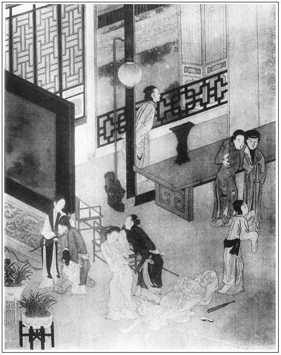

張回寫敬濟無知小子未經世事，強作解人如畫，喚醒多少浮浪子弟。
打敬濟必用雪娥，蓋殘枝敗莖，必用雪壓之而倒也。然後知入手金蓮激打雪娥文字之妙。
張團練，喻荷蓋之猶張也。今雪壓陳莖之芰，宜乎團蓋不能復張，故下文張團練，即與敬濟分矣。
夫水秀才不來，溫秀才已去，瓶兒已罄，梅子不酸，則蓮花之渴何如？是能少延旦夕殘喘，不過於污泥中取其潮濕耳。然則金蓮之不堪田地又何如？
夫金蓮一去，理應即用武二手刃之，惟恨其緩也，奈何又到下回？不知作者蓋欲順水推船，將伯爵十弟兄公案一照，故用張二官。不然，平平散去，猶不盡十弟兄之惡。若春鴻又是順水船中順便文字。至於守備府又為「埋屍」一段文字。夫必寫「埋屍」，所以結金蓮，出落春梅之筍也。至若陳敬濟，又不得不然之文，且為歸結陳洪、張氏、大姐之筍。而後文馮金寶，並嚴州，又為作花子、做道士之筍。一層層又逼入守備府中，與春梅復合也。文字相生開合之妙如此，是大間架，蓋五鳳樓手。
金蓮一生之淫行，千古罕見。以敬濟為西門之婿而不知羞，皆可與合；以王潮為王婆兒，亦可與合，則天下之畜類，凡為陽物者，亦無不可與合也。
詩曰：
雨打梨花倍寂寥，幾迴腸斷淚珠拋。
睽違一載猶三載，情緒千絲與萬條。
好句每從秋裡得，離魂多自夢中消。
香羅重解知何日，辜負巫山幾暮朝。

話說潘金蓮自從春梅去後，房中納悶，不題。單表陳敬濟，次日上飯時出去，假作討帳，騎頭口到於薛嫂兒家。薛嫂兒正在屋裡，一面讓進來坐。敬濟拴了頭口，進房坐下，點茶吃了。薛嫂故意問：「姐夫來有何話說？」敬濟道：「我往前街討帳，竟到這裡。昨晚小大姐出來了，在你這裡？」薛嫂道：「是在我這裡，還未上主兒哩。」敬濟道：「在這裡，我要見他，和他說句話兒。」薛嫂故作喬張致，繡眉雖是起發，卻說得婉款，不似王婆一味死狠。說：「好姐夫，昨日你家丈母好不分付我，張夾與後王婆不同。因為你每通同作弊，弄出醜事來，才把他打發出門，教我防範你們，休要與他會面說話。你還不趁早去哩，只怕他一時使將小廝來看見，到家學了，又是一場兒。張夾明透下文。倒沒的弄的我也上不的門。」那敬濟便笑嘻嘻袖中拿出一兩銀子來：「權作一茶，你且收了，改日還謝你。」那薛嫂見錢眼開，便道：「好姐夫，自恁沒錢使，將來謝我！只是我去年臘月，你鋪子當了人家兩付扣花枕頂，將有一年來，本利該八錢銀子，你尋與我罷。」繡眉討添得妙，妙在近情。張夾偏以閒筆作襯，又過入下文來安。敬濟道：「這個不打緊，明日就尋與你。」
這薛嫂兒一面請敬濟裡間房裡去，與春梅廝見，一面叫他媳婦金大姐定菜兒，「我去買茶食點心。」又打了一壺酒，並肉鮓之類，教他二人吃。這春梅看見敬濟，說道：「姐夫，你好人兒，就是個弄人的劊子手！把俺娘兒兩個弄的上不上下不下，出醜惹人嫌，到這步田地。」繡眉說離散處，語似恨而實苦。敬濟道：「我的姐姐，你既出了他家門，我在他家也不久了。『妻兒趙迎春，各自尋投奔』。張夾又悟隙底私窺一回。你教薛媽媽替你尋個好人家去罷，我『醃韭菜──已是入不的畦』張夾不娶春梅，意在金蓮也。了。我往東京俺父親那裡去計較了回來，把他家女兒休了，只要我家寄放的箱子。」說畢，張夾敬濟敢於肆惡壯膽處在此，又是西門之愚。不一時，薛嫂買將茶食酒菜來，放炕桌兒擺了，兩個做一處飲酒敘話。薛嫂也陪他吃了兩盞，一遞一句，說了回月娘心狠：「宅裡恁個出色姐兒出來，通不與一件兒衣服簪環。就是往人家上主兒去，裝門面也不好看。張夾春梅、敬濟二人旁夾一人，便有旁人那得知之歎。還要舊時原價。就是清水，這碗裡傾倒那碗內，也拋撒些兒。張夾若是金蓮，碗中清水，固淵泉不絕也。原來這等夾腦風。臨時出門，倒虧了小玉丫頭做了個分上，張夾小玉得寵如畫。教他娘拿了兩件衣服與他。不是，往人家相去，拿甚麼做上蓋？」比及吃得酒濃時，薛嫂教他媳婦金大姐抱孩子，躲去人家坐的，教他兩個在裡間自在坐個房兒。繡旁偏照顧得到。正是：
雲淡淡天邊鸞鳳，水沉沉波底鴛鴦。
寫成今世不休書，結下來生歡喜帶。
兩個干訖，一度作別，比時難割難捨。繡旁後相思種子。張夾為下數回大書作地。薛嫂恐怕月娘使人來瞧，連忙攛掇敬濟出港，騎上頭口來家。
遲不上兩日，敬濟又稍了兩方銷金汗巾，兩雙膝褲與春梅，又尋枕頭出來與薛嫂兒。又拿銀子打酒，在薛嫂兒房內正和春梅吃酒，不想月娘使了來安小廝來催薛嫂兒：「怎的還不上主兒？」看見頭口拴在門首，來安兒到家學了舌，說：「姐夫也在那裡來。」月娘聽了，心中大怒，使人一替兩替叫了薛嫂兒去，盡力數說了一遍，道：「你領了奴才去，今日推明日，明日推後日，只顧不上緊替我打發，好窩藏著養漢掙錢兒與你家使。張夾原是。若是你不打發，把丫頭還與我領了來，我另教馮媽媽子賣，你再休上我門來。」張夾必如此，好催梅花別放。這薛嫂兒聽了，到底還是媒人的嘴，說道：「天麼天麼！你老人家怪我差了。我趕著增福神著棍打？你老人家照顧我，怎不打發？昨日也領著走了兩三個主兒，都出不上，你老人家要十六兩原價，俺媒人家那裡有這些銀子陪上。」繡眉不獨洗清，還要趁勢壓價錢，狠心利嘴。月娘又道：「小廝說陳家種子張夾輕薄語，月娘自是勢利場中人。今日在你家和丫頭吃酒來。」薛嫂慌道：「耶樂！耶樂！又是一場兒。還是去年臘月，當了人家兩付枕頂，在咱獅子街鋪內，銀子收了，今日姐夫送枕頂與我。我讓他喫茶，他不吃，忙忙就上頭口來了。幾時進屋裡吃酒來！原來咱家這大官兒，恁快搗謊駕舌！」月娘吃他一篇，說的不言語了，說道：「我只怕一時被那種子設念隨邪，差了念頭。」薛嫂道：「我是三歲小孩兒？豈可恁些事兒不知道。你那等分付了我，我長吃好，短吃好？他在那裡也沒的久停久坐，與了我枕頭，茶也沒吃就來了。幾曾見咱家小大姐面兒來！萬物也要個真實，你老人家就上落我起來。既是如此，如今守備周老爺府中，要他圖生長，只出十二兩銀子。張夾過入周守備府無痕。看他若添到十三兩上，我兌了銀子來罷。說起來，守備老爺前者在咱家酒席上，也曾見過小大姐來。因他會這幾套唱，好模樣兒，才出這幾兩銀子。又不是女兒，其餘別人出不上。」薛嫂當下和月娘砸死了價錢。
次日，早把春梅收拾打扮，妝點起來，戴著圍發雲髻兒，滿頭珠翠，穿上紅段襖兒，藍段裙子，腳上雙鸞尖翹翹，一頂轎子送到守備府中。周守備見了春梅生的模樣兒，比舊時越又紅又白，張夾所為白梅花對紅梅花者也，我雲兩樣寫法以此。身段兒不短不長，一雙小腳兒，滿心歡喜，繡眉守備見春梅，只一歡喜，便不說完，其味直如春欖，且隱隱接去無痕。就兌出五十兩一錠元寶來，這薛嫂兒拿出家，鑿下十三兩銀子，往西門慶家交與月娘，另外又拿出一兩來，說：「是周爺賞我的喜錢，張夾價錢輕，而賞錢重，妙絕。你老人家這邊不與我些兒？」那吳月娘免不過，只得又秤出五錢銀子與他，恰好他還禁了三十七兩五錢銀子。十個九個媒人，都是如此賺錢養家。張夾令人不為月娘恨，而為玉樓恨。
卻表陳敬濟見賣了春梅，又不得往金蓮那邊去，見月娘凡事不理他，門戶都嚴禁，到晚夕親自出來，打燈籠前後照看，上了鎖，方才睡去，因此弄不得手腳。敬濟十分急了，先和西門大姐嚷了兩場，繡旁必至之情。淫婦前淫婦後罵大姐：「我在你家做女婿，不道的雌飯吃，吃傷了！你家收了我許多金銀箱籠，張夾恃橫處在此。你是我老婆，不顧贍我，反說我雌你家飯吃！我白吃你家飯來？」罵的大姐只是哭涕。
十一月念七日，孟玉樓生日。張夾又是一年。玉樓安排了幾碗酒菜點心，好意教春鴻拿出前邊鋪子，教敬濟陪傅夥計吃。月娘便攔說：「他不是才料。休要理他。繡旁亦太冷。要與傅夥計，自與傅夥計自家吃就是了，不消叫他。」張夾還映邀來上房知謝，便見月娘失防閒便絕不防閒，刻薄處又極刻薄，天下壞事不知事人確有如此。玉樓不肯。繡旁厚道。春鴻拿出來，擺在水櫃上。一大壺酒都吃了，不勾，又使來安兒後邊要去。傅夥計便說：「姐夫不消要酒去了，這酒勾了，我也不吃了。」敬濟不肯，張夾不知深淺人如此。定要來安要去。等了半晌，來安兒出來，回說沒了酒了。這陳敬濟也有半酣酒兒在肚內，又使他要去，那來安不動。又另拿錢，打了酒來吃著。罵來安兒：「賊小奴才兒，你別要慌！你主子不待見我，連你這奴才每也欺負我起來了，使你使兒不動。我與你家做女婿，不道的酒肉吃傷了，有爹在怎麼行來？今日爹沒了，就改變了心腸，把我來不理，都亂來擠撮我。我大丈母聽信奴才言語，凡事托奴才，不托我。由他，我好耐驚耐怕兒！」傅夥計勸道：「好姐夫，快休舒言。不敬奉姐夫，再敬奉誰？想必後邊忙。怎不與姐夫吃？你罵他不打緊，牆有縫，壁有耳，恰似你醉了一般。」敬濟道：「老夥計，你不知道，我酒在肚裡，事在心頭。俺丈母聽信小人言語，罵我一篇是非。就算我㒲了人，人沒㒲了我？張夾妙語，後日冷鋪中、晏公廟，則此話難說矣。好不好我把這一屋子裡老婆都刮剌了，到官也只是後丈母通姦，論個不應罪名。張夾單指月娘。如今我先把你家女兒休了，然後一紙狀子告到官。再不，東京萬壽門進一本，張夾容易之甚。你家見收著我家許多金銀箱籠，都是楊戩應沒官贓物。張夾作死，卻是未見天日之言，然自是西門失計。好不好把你這幾間業房子都抄沒了，老婆便當官辦賣。我不圖打魚，只圖混水耍子。繡眉敬濟又恨又急，又沒法奈何。又欺月娘孤寡，故無忌憚如此。然妙在語語是少年不經事，市井油滑狂妄之談。會事的把俺女婿收籠著，照舊看待，還是大家便益。」張夾本意復合。傅夥計見他話頭兒來的不好，說道：「姐夫，你原來醉了。王十九，只吃酒，且把散話革起。」這敬濟眼瞅著傅夥計，罵道：「老賊狗，怎的說我散話！揭挑我醉了，吃了你家酒來？我不才是他家女婿嬌客，你無故只是他家行財，你也擠撮我起來！張夾是醉語。是憤語。我教你這老狗別要慌，你這幾年賺的俺丈人錢勾了，飯也吃飽了，心裡要打伙兒把我疾發了去，要奪權兒做買賣，好禁錢養家。繡眉語雖妄誕，然而胸中無聊極矣。我明日本狀也帶你一筆。張夾又容易之甚。教他打官司！」繡旁妙語。那傅夥計最是個小膽兒的人，見頭勢不好，穿上衣裳，悄悄往家一溜煙走了。小廝收了家活，後邊去了，敬濟倒在炕上睡下，一宿晚景題過。
次日，傅夥計早辰進後邊，見月娘把前事具訴一遍，哭哭啼啼，要告辭家去，交割帳目，不做買賣了。月娘便勸道：「夥計，你只安心做買賣，休要理那潑才料，如臭屎一般丟著他。張夾月娘意只如此便了。當初你家為官事投到俺家來權住著，繡眉一「權」字已有逐客之意。有甚金銀財寶？張夾月娘抵賴，總是與瓶兒寄物吐氣。也只是大姐幾件妝奩，隨身箱籠。你家老子便躲上東京去了，那時恐怕小人不足，教俺家晝夜耽心。你來時才十六七歲，黃毛團兒也一般。也虧在丈人家養活了這幾年，調理的諸般買賣兒都會。今日翅膀毛兒干了，反恩將仇報，一掃帚掃的光光的。小孩兒家說話欺心，恁沒天理，到明日只天照看他！夥計，你自安心做你買賣，休理他便了。他自然也羞。」張夾不是常教他羞的事。一面把傅夥計安撫住了不題。
一日，也是合當有事，印子鋪擠著一屋裡人贖討東西。只見奶子如意兒，抱著孝哥兒送了一壺茶來與傅夥計吃，放在桌上。孝哥兒在奶子懷裡，哇哇的只管哭。這陳敬濟對著那些人，作耍當真說道：「我的哥哥，乖乖兒，你休哭了。」向眾人說：「這孩子倒相我養的，依我說話，張夾寫來確是不知事後生。教他休哭，他就不哭了。」繡眉明弄風，放刀撒潑，冀月娘畏而重之，或可與金蓮重合，是癡心，卻是下著。那些人就呆了。如意兒說：「姐夫，你說的好妙話兒，越發叫起兒來了，看我進房裡說不說。」這陳敬濟趕上踢了奶子兩腳，戲罵道：「怪賊邋遢，張夾市井如畫。你說不是！我且踢個響屁股兒著。」繡旁語趣。那奶子抱孩子走到後邊，如此這般向月娘哭說：「姐夫對眾人將哥兒這般言語發出來。」這月娘不聽便罷，聽了此言，正在鏡台邊梳著頭，張夾必對鏡，寫月影也。半日說不出話來，往前一撞，就昏倒在地，不省人事。但見：
荊山玉損，可惜西門慶正室夫妻；寶鑒花殘，枉費九十日東君匹配。
花容掩淡，猶如西園芍葯倚朱欄；檀口無言，一似南海觀音來入定。
小園昨日春風急，吹折江梅就地花。張夾月蝕也。
慌了小玉，叫將家中大小，扶起月娘來炕上坐的。孫雪娥跳上炕，撅救了半日，舀薑湯灌下去，半日甦醒過來。月娘氣堵心胸，只是哽咽，哭不出聲來。奶子如意兒對孟玉樓、孫雪娥，將敬濟對眾人將哥兒戲言之事，說了一遍：「我好意說他，又趕著我踢了兩腳，把我也氣的發昏在這裡。」雪娥扶著月娘，待的眾人散去，悄悄在房中對月娘說：「娘也不消生氣，氣的你有些好歹，越發不好了。張夾必用雪娥，一絲不紊。怨毒之於人大矣哉。這小廝因賣了春梅，不得與潘家那淫婦弄手腳，才發出話來。如今一不做，二不休，大姐已是嫁出女，如同賣出田一般，咱顧不得他這許多。常言養蝦蟆得水蠱兒病，只顧教那小廝在家裡做甚麼！明日哄賺進後邊，下老實打與他一頓，張夾上岳廟時，廚房灶前，此氣一吐。即時趕離門，教他家去。張夾處敬濟如此。然後叫將王媽媽子來，把那淫婦教他領了去，變賣嫁人，如同狗屎臭尿，掠將出去，一天事都沒了。張夾處金蓮如此。平空留著他在家裡做甚麼！到明日，沒的把咱們也扯下水去了。」繡眉雪娥雖未免公報私仇，然為此時計，亦未有善於此者。張夾雪娥說完，乃知激打一回，直透此處。月娘道：「你說的也是。」當下計議已定了。
到次日，飯時已後，月娘埋伏了丫鬟媳婦七八個人，各拿短棍棒槌。使小廝來安兒請進陳敬濟來後邊，只推說話。把儀門關了，教他當面跪下，問他：「你知罪麼？」那陳敬濟也不跪，轉把臉兒高揚，佯佯不採。張夾是此日敬濟。月娘大怒，於是率領雪娥並來興兒媳婦、張旁必點二人，恩怨分明。來昭妻一丈青、中秋兒、小玉、繡春眾婦人，七手八腳，按在地下，拿棒槌短棍打了一頓。張夾亦非如此處之之道。西門大姐走過一邊，也不來救。打的這小伙兒急了，把褲子脫了，露出那直豎一條棍來。繡眉這等想頭，不知從何處得來，想有色鬼附其腕。張夾深丑月娘之筆。諕的眾婦人看見，卻丟下棍棒亂跑了。月娘又是那惱，又是那笑，口裡罵道：「好個沒根基的忘八羔子！」敬濟口中不言，心中暗道：「若不是我這個法兒，怎得脫身。」於是扒起來，一手兜著褲子，往前走了。月娘隨令小廝跟隨，教他算帳，交與傅夥計。敬濟自知也立腳不定，一面收拾衣服鋪蓋，也不作辭，使性兒一直出離西門慶家，逕往他母舅張團練家，張夾芰莖惟與荷蓋相依矣。他舊房子自住去了。正是：
唯有感恩並積恨，萬年千載不生塵。
潘金蓮在房中，聽見打了陳敬濟，趕離出門去了，越發憂上加憂，悶上添悶。一日，月娘聽信雪娥之言，使玳安兒去叫了王婆來。那王婆自從他兒子王潮跟淮上客人，拐了起車的一百兩銀子來家，得其發跡，也不賣茶了，張夾為解渴作地。買了兩個驢兒，安了盤磨，一張羅櫃，開起磨房來。聽見西門慶宅裡叫他，連忙穿衣就走，張夾映前。到路上問玳安說：「我的哥哥，幾時沒見你，又早籠起頭去了，有了媳婦兒不曾？」玳安道：「還不曾有哩。」王婆子道：「你爹沒了，你家誰人請我做甚麼？莫不是你五娘養了兒子了，請我去抱腰？」玳安道：「俺五娘倒沒養兒子，倒養了女婿。繡旁妙語。張夾天成妙語，玳安的的可兒。俺大娘請你老人家，領他出來嫁人。」王婆子道：「天麼，天麼，你看麼！我說這淫婦，死了你爹，怎守的住。只當狗改不了吃屎，繡旁趣語。就弄磣兒來了。張夾又是天生妙喻。就是你家大姐那女婿子？他姓甚麼？」繡旁伏脈。張夾王婆總是一絲不漏。許久不見，寫來使婆子活跳紙上，不改一線，真是化工之筆。玳安道：「他姓陳，名喚陳敬濟。」王婆子道：「想著去年，我為何老九的事，去央煩你爹。到宅內，你爹不在，賊淫婦他就沒留我房裡坐坐兒，折針也迸不出個來，繡旁又夾出來時貪想，妙。張夾方知寫何十事之妙，為此下線也。只叫丫頭倒一鍾清茶我吃了，出來了。我只道千年萬歲在他家，如何今日也還出來！好個浪蹄子淫婦，張夾數語為後文潮嫁作勢。休說我是你個媒主，替你作成了恁好人家，就是閒人進去，也不該那等大意。」玳安道：「為他和俺姐夫在家裡吵嚷作亂，昨日差些兒沒把俺大娘氣殺了哩。俺姐夫已是打發出去了，只有他老人家，如今教你領他去哩。」王婆子道：「他原是轎兒來，少不得還叫頂轎子。他也有個箱籠來，這裡少不的也與他個箱子兒。」玳安道：「這個少不的，俺大娘自有個處。」
兩個說話間，到了門首。進入月娘房裡，道了萬福坐下，丫鬟拿茶吃了。月娘便道：「老王，無事不請你來。」悉把潘金蓮如此這般，上項說了一遍：「今來是是非人，去是是非者。一客不煩二主，還起動你領他出去，或聘嫁，或打發，叫他吃自在飯去罷。我男子漢已是沒了，招攬不過這些人來。說不的當初死鬼為他張夾月娘無禮處，可殺。丟了許多錢底那話了，就打他恁個銀人兒也有。繡旁雖恨語，亦不宜。張夾玉樓、瓶兒皆帶銀錢來，惟至金蓮費出錢去，然則金蓮，為單以色見長乎？如今隨你聘嫁，多少兒交得來，我替他爹念個經兒，也是一場勾當。」王婆道：「你老人家，是稀罕這錢的？只要把禍害離了門就是了。繡眉只一語便打到心上，把銀子抹過，真利嘴。張夾亦是正言，早已佔地。我知道，我也不肯差了。」又道：「今日好日，就出去罷。又一件，他當初有個箱籠兒，有頂轎兒來，也少不的與他頂轎兒坐了去。」月娘道：「箱子與他一個，轎子不容他坐。」小玉道：「俺奶奶氣頭上便是這等說，到臨岐，少不的雇頂轎兒。不然街坊人家看著，拋頭露面的，不吃人笑話？」張夾處處寫小玉，為竊玉之根。月娘不言語了，張夾寵愛小玉，如畫。一面使丫鬟繡春，前邊叫金蓮來。繡眉便下一「叫」，傷心字。
這金蓮一見王婆子在房裡，就睜了，向前道了萬福，坐下。王婆子開言便道：「你快收拾了。剛才大娘說，教我今日領你出去哩。」金蓮道：「我漢子死了多少時兒，我為下甚麼非，作下甚麼歹來？如何平空打發我出去？」王婆道：「你休稀里打哄，做啞裝聾！自古蛇鑽窟窿蛇知道，各人幹的事兒，各人心裡明。金蓮你休呆裡撒奸，說長道短，我手裡使不的巧語花言，張夾如《西遊記》尋得妖精，主人公來也。幫閒鑽懶。自古沒個不散的筵席，出頭椽兒先朽爛，人的名兒，樹的影兒。蒼蠅不鑽沒縫兒蛋，你休把養漢當飯，張夾妙語不煩。我如今要打發你上陽關。」繡眉小人於世，並不肯讓人一刻，全人半點，當下辟面便來，可畏，可悲，可歎。張夾乃作者特特打發其上鬼門關也。金蓮見勢頭不好，料難久住，便也發話道：「你打人休打臉，罵人休揭短！有勢休要使盡了，趕人不可趕上。我在你家做老婆，也不是一日兒，怎聽奴才淫婦戳舌，便這樣絕情絕義的打發我出去！張夾方知寫書僮、玉蕭以至於撒潑者，為此二語。我去不打緊，只要大家硬氣，守到老沒個破字兒才好。」繡旁還不饒人。張夾又為玉樓、雪娥作過文。
當下金蓮與月娘亂了一回。月娘到他房中，打點與了他兩個箱子，一張抽替桌兒，四套衣服，幾件釵梳簪環，一床被褥。其餘他穿的鞋腳，都填在箱內。把秋菊叫到後邊來，一把鎖就把房門鎖了。繡旁月娘亦做得出。張夾月娘狠極。生生世世不願見此等人。金蓮穿上衣服，拜辭月娘，在西門慶靈前大哭了一回。繡眉眾妾散去，獨金蓮辭靈大哭，可見情之所鍾，雖無情人，亦不能絕。又走到孟玉樓房中，也是姊妹相處一場，一旦分離，兩個落了一回眼淚。張夾此處又以玉樓襯月娘。玉樓瞞著月娘，悄悄與了他一對金碗簪子，一套翠藍段襖、紅裙子，說道：「六姐，奴與你離多會少了，你看個好人家，往前進了罷。自古道，千里長篷，也沒個不散的筵席。張夾二語冷盡西門一生。你若有了人家，使個人來對我說聲，奴往那裡去，張夾那裡去者，有去志也。順便到你那裡看你去，張夾又是永福寺內讖語。也是姊妹情腸。」繡眉玉樓雖是安慰金蓮，然隱隱情見乎詞矣。於是灑淚而別。張夾映春梅。臨出門，小玉送金蓮，悄悄與了金蓮兩根金頭簪兒。張夾此處又以小玉之簪，映轉金蓮、玉樓、瓶兒諸簪，為離合大關目。金蓮道：「我的姐姐，你倒有一點人心兒在我。」王婆又早僱人把箱籠桌子抬的先去了。獨有玉樓、小玉送金蓮到門首，坐了轎子才回。張夾玉樓實終始金蓮、瓶兒、春梅三人。正是：
世上萬般哀苦事，無非死別共生離。
卻說金蓮到王婆家，王婆安插他在裡間，晚夕同他一處睡。他兒子王潮兒，也長成一條大漢，籠起頭去了，還未有妻室，外間支著床睡。這潘金蓮次日依舊打扮，喬眉喬眼在簾下看人。張夾仍復收到簾下，何等筆力！無事坐在炕上，不是描眉畫眼，就是彈弄琵琶。張夾方是金蓮。王婆不在，就和王潮兒斗葉兒、下棋。張夾方是金蓮。那王婆自去掃面，餵養驢子，不去管他。朝來暮去，又把王潮兒刮剌上了。晚間等的王婆子睡著了，婦人推下炕溺尿，走出外間床上，和王潮兒兩個干，搖的床子一片響聲。繡眉金蓮於此味，老的少的、村的俏的、貴的賤的，皆有所遇，可謂備嘗之矣。張夾爽是十分滿足。被王婆子醒來聽見，問那裡響。王潮兒道：「是櫃底下貓捕老鼠響。」王婆子睡夢中，喃喃吶吶，口裡說道：「只因有這些麩面在屋裡，引的這扎心的半夜三更耗爆人，不得睡。」張夾一語透過武二之刃。良久，又聽見動旦，搖的床子格支支響，王婆又問那裡響。王潮道：「是貓咬老鼠，鑽在炕洞下嚼的響。」繡眉眼前景，心上事，偏道得出。婆子側耳，果然聽見貓在炕洞裡咬的響，方才不言語了。婦人和小廝幹完事，依舊悄悄上炕睡去了。有幾句雙關，說得這老鼠好：
你身軀兒小，膽兒大，嘴兒尖，忒潑皮。見了人藏藏躲躲，耳邊廂叫叫唧唧，攪混人半夜三更不睡。不行正人倫，偏好鑽穴隙。更有一樁兒不老實，到底改不的偷饞抹嘴。張夾直與瓢的一唱相對，前後一緊，方好殺金蓮也。
有日，陳敬濟打聽得潘金蓮出來，還在王婆家聘嫁，因提著兩吊銅錢，走到王婆家來。婆子正在門前掃驢子撒的糞。這敬濟向前深深地唱個喏。婆子問道：「哥哥，你做甚麼？」敬濟道：「請借裡邊說話。」王婆便讓進裡面。敬濟便道：「動問西門大官人宅內，有一位娘子潘六姐，在此出嫁？」王婆便道：「你是他甚麼人？」那敬濟嘻嘻笑道：「不瞞你老人家說，我是他兄弟，他是我姐姐。」那王婆子眼上眼下，打量他一回，說：「他有甚兄弟，我不知道，你休哄我。你莫不是他家女婿姓陳的，在此處撞蠓子，繡旁活賊。張夾寫王婆子，真是狠手，非薛嫂、文嫂可比。我老娘手裡放不過。」敬濟笑向腰裡解下兩吊銅錢來，放在面前，說：「這兩弔錢權作王奶奶一茶之費，教我且見一面，改日還重謝你老人家。」婆子見錢，越發喬張致起來，便道：「休說謝的話。他家大娘子分付將來，不許教閒雜人來看他。咱放倒身說話，你既要見這雌兒一面，與我五兩銀子，見兩面與我十兩。張夾又映十分光。你若娶他，便與我一百兩銀子，我的十兩媒人錢在外。繡眉終是老手，刀刀見血。張夾何不令每日見面？倒是婆子的搖錢樹。我不管閒帳。你如今兩串錢兒，打水不渾的，做甚麼？」敬濟見這虔婆口硬，不收錢，又向頭上拔下一對金頭銀腳簪子，重五錢，殺雞扯腿跪在地下，說道：「王奶奶，你且收了，容日再補一兩銀子來與你，不敢差了。且容我見他一面，說些話兒則個。」那婆子於是收了簪子和錢，分付：「你進去見他，說了話就與我出來。不許你涎眉睜目，只顧坐著。繡旁斷得趣甚。張夾總是為生法地步，非吃醋也。所許那一兩頭銀子，明日就送來與我。」張夾與成衣日要十兩頭遙對，西門有知，此際何如？於是掀簾，放敬濟進裡間。
婦人正坐在炕上，看見敬濟，便埋怨他道：「你好人兒！弄的我前不著村，後不著店，有上稍，沒下稍，出醜惹人嫌。張夾與春梅一樣話。你就影兒也不來看我看兒了。我娘兒們好好的，拆散的你東我西，皆是為誰來？」說著，扯住敬濟，只顧哭泣。張夾此處與春梅不同。王婆又嗔哭，恐怕有人聽見。張夾夾寫王婆，筆力到底勁甚。敬濟道：「我的姐姐，我為你剮皮剮肉，你為我受氣耽羞，張夾二語又是癡心做處。怎不來看你？昨日到薛嫂兒家，已知春梅賣在守備府裡去了，才打聽知你出離了他家門，在王奶奶這邊聘嫁。今日特來見你一面，和你計議。咱兩個恩情難捨，拆散不開，如之奈何？我如今要把他家女兒休了，問他要我家先前寄放金銀箱籠。他若不與我，我東京萬壽門一本一狀進下來，那裡他雙手奉與我還是遲了。我暗地裡假名托姓，一頂轎子娶到你家去，咱兩個永遠團圓，做上個夫妻，有何不可？」張夾又一個要偷娶，西門典型尚在。婦人道：「現今王乾娘張夾又不是老王了。要一百兩銀子，你有這些銀子與他？」敬濟道：「如何要這許多？」婆子說道：「你家大丈母說，當初你家爹，為他打個銀人兒也還多，定要一百兩銀子，少一絲毫也成不的。」敬濟道：「實不瞞你老人家說，我與六姐打得熱了，拆散不開，看你老人家下顧，退下一半兒來，五六十兩銀子也罷，我往母舅那裡典上兩三間房子，娶了六姐家去，也是春風一度。你老人家少轉些兒罷。」婆子道：「休說五六十兩銀子，八十兩也輪不到你手裡了。昨日湖州販紬絹何官人，繡旁劈空扭來作脈，妙甚。出到七十兩；張夾何官人，本為王六兒出線，不謂又為潘六兒閒映。不知又為王六兒點歸著，文字嚴整細密之甚。大街坊張二官府，如今見在提刑院掌刑，張夾又是提刑院，西門有知將奈何？使了兩個節級來，出到八十兩上，拿著兩卦銀子來兌，還成不的，都回去了。你這小孩兒家，空口來說空話，倒還敢奚落老娘，老娘不道的吃傷了哩！」張夾一味狠毒。當下一直走出街上，大吆喝說：「誰家女婿要娶丈母，還來老娘屋裡放屁！」繡眉又赫他一陣，是降小伙兒手段。張夾一味狠毒。敬濟慌了，一手扯進婆子來，雙膝跪下央及：「王奶奶噤聲，我依王奶奶價值一百兩銀子罷。爭奈我父親在東京，我明日起身往東京取銀子去。」婦人道：「你既為我一場，休與乾娘爭執，上緊取去，只恐來遲了，別人娶了奴去，就不是你的人了。」張夾淫婦囑人如此，自身不能主也。敬濟道：「我雇頭口連夜兼程，多則半月，少則十日就來了。」婆子道：「常言先下米先食飯，我的十兩銀子在外，休要少了，繡旁一步緊一步。我先與你說明白著。」張夾一味狠毒。敬濟道：「這個不必說，恩有重報，不敢有忘。」說畢，敬濟作辭出門，到家收拾行李，次日早雇頭口，上東京取銀子去。此這去，正是：
青龍與白虎同行，吉凶事全然未保。
文回文禹門云：寫陳敬濟一無知少年，孟浪小子，全無道理，一味荒唐，栩栩欲活，歷歷如見。要不如此，不可以為西門慶女婿；而西門慶之女婿，亦必須如此。西門慶之造孽也，全是胯下物，而卒喪命於此物。陳敬濟之被逐被打也，亦因胯下物，而得逃出亦此物。然則此翁婿二人，均不過是一鳥物而已。
若潘金蓮，固以此物為生死者也，竟至以王潮兒解渴。寫金蓮之淫，亦可謂寫到十二分。死期近矣，再活亦不過如此。
或謂敬濟之被打，春梅、金蓮之被逐，吳月娘無乃太忍。試掩卷思之，有何善法，以處此三人？是三人者，若使常在西門家中，其患將有不可勝言者，寡婦孤兒之聲名性命，恐亦未能保全。此猶是月娘之才能，而西門慶之大幸也。